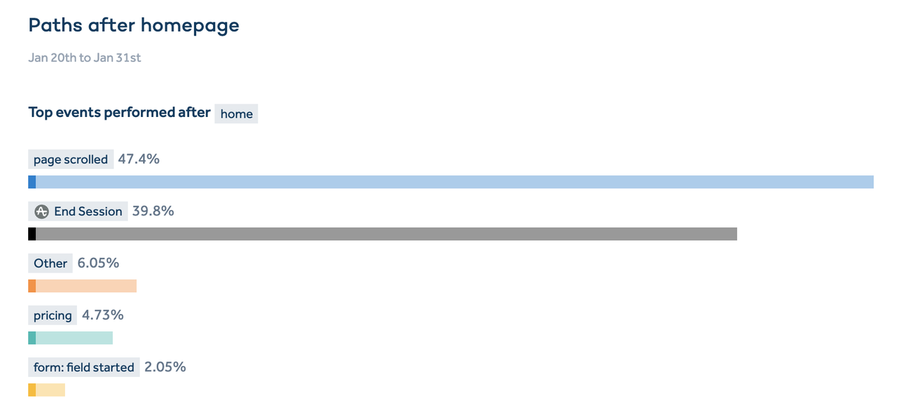
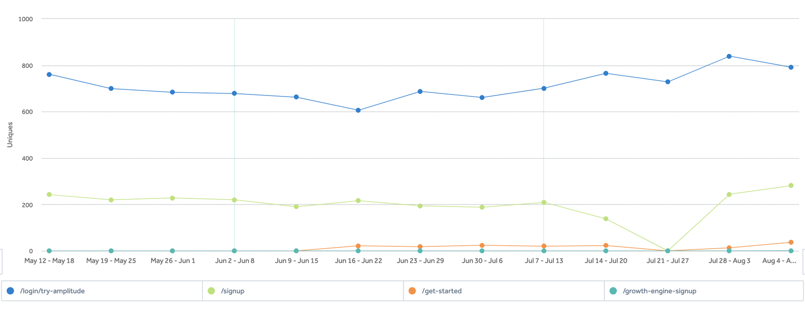
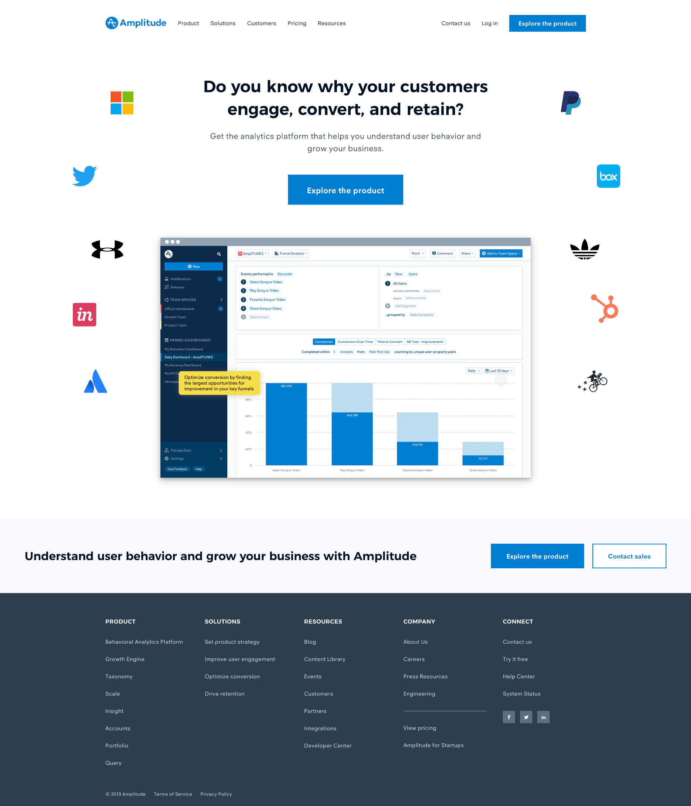
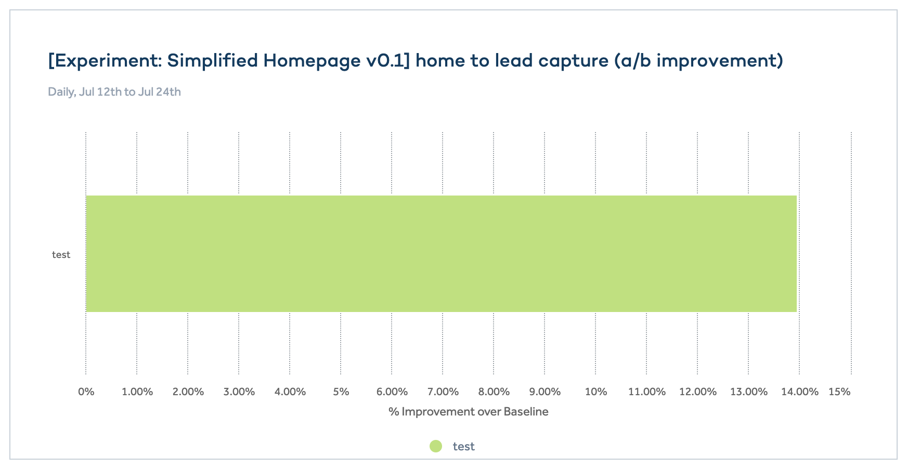
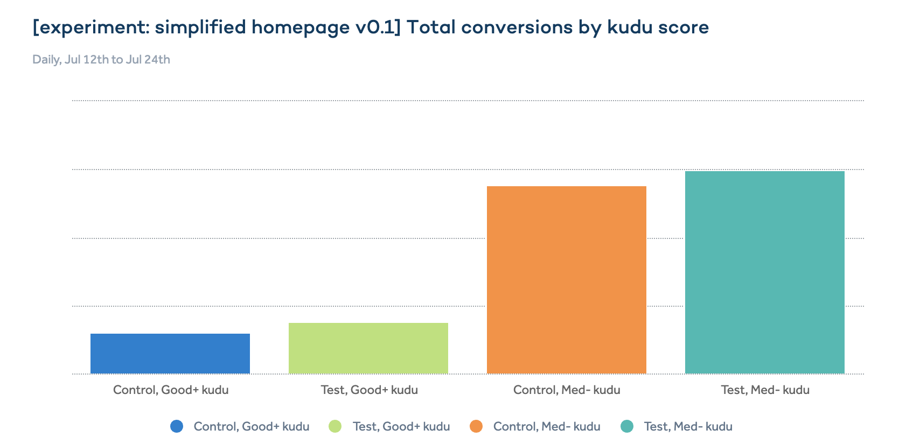
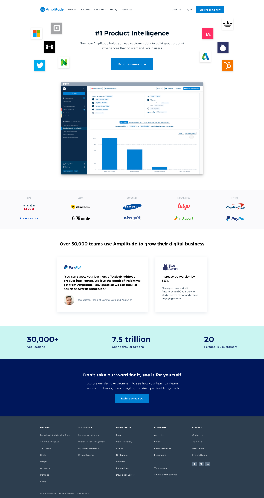
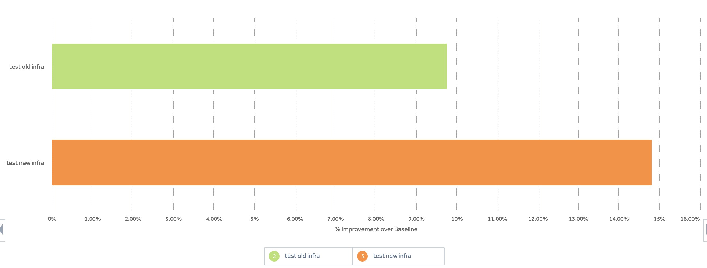

Background
From April 2019, I joined the Amplitude Growth team as the lead designer to help them with their mission; generate predictable and scalable growth for qualified sales pipelines. We iteratively refined the user experience and drove 15% more leads through the homepage using both qualitative user research and quantitative A/B testing with Optimizely.
Learnings from User research
I began with a round of qualitative user research, which I believe is the most effective way to align the team and set the vision for experimental design.
I interviewed 10 PMs who aren’t existing or past Amplitude users. They were asked to evaluate Amplitude as an analytics vendor for their team using the website and the public demo.
-
The research surfaced several of patterns:
- Our marketing copy isn’t informative enough for people to get a clear picture of what Amplitude does.
- Potential buyers want to see real product screenshots and social proof rather than the abstract illustrations we have.
- Social proof makes people more confident in our product.
- Our public demo works really well at telling the Amplitude story after the user overcomes the initial overwhelming experience when first landed into the product.
In addition to qualitative research, we also explored the quantitative data to learn more about user behavior on the website.
There is a need for a much simpler website
Getting attention on the web is hard, as a result, only a fraction of the existing website is being viewed. We felt the need to create a much simpler and focused experience optimized for potential buyers.
The public demo leads to the most lead creations and form submits
We’ve also learned that the public demo drives a lot more lead conversion compare to other sources. Instead of trying to get people to do different actions on the homepage, we believe it would be far more effective to optimize for getting more traffic into the public demo first.
The bets
After reviewing learnings from both qualitative and quantitative research, we set the vision for the upcoming experiments. We made the following bets:
- Getting potential buyer closer to the product. We want to design a new homepage that directly showcase the actual product UI instead of illustrations.
- Simplify the home page to optimize for potential buyers and driving traffic into the public demo
- Increase credibility by adding more effective social proof
Experiment 1: Extremely simplified homepage
I designed an extremely simple homepage showcasing nothing but a headline, a CTA and a product animation. Our goal for this experiment is to test the “leading with product” approach. I decided to remove all the other aspects of the page to isolate the impact of the product animation from other factors like social proof.

The result of the experiment shown a 14% lift over baseline in terms of lead conversion.
We’ve also noticed a 23% improvement in the percentage of leads that were good+. And a 41% lift in the absolute number of good+ leads compared to control.
The result of this experiment has validated our hypothesis of potential buyers wants to see the product. Our assumption is the using of the product to tell a story invites more serious buyers to explore our product demo.
Experiment 2: Slightly less simplified homepage
Following the previous example, I created another iteration of the homepage. The product demo continues to be front and center with. We’ve also added back more full logos, customer quotes, and shortcuts to case studies.
In the meantime, our engineering team finished up developing a new website infrastructure that’s more friendly for A/B tests and has better performance. So we released a multi-variant test to test this version on both old infrastructure and new infrastructure.
Both test groups are outperforming the control group. And the test group on the new infrastructure is performing the best with a lift of 14.8% improvement over baseline. And we continue to see the same increase in the number of leads with good+ scoring.
Outcome
We’ve resolved the experiment to serve to 100% traffic on the new infrastructure.